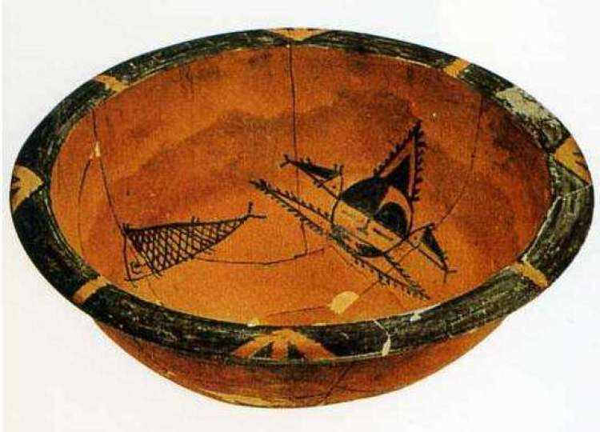

这件彩陶盆不太大，在砖红色的内壁上，用黑色描画着两组相同的图案，图案两两相对，对称分布。一组是两条用线条描画的鱼，看样子可能是鲤鱼；另一组是两个人面鱼纹图案，这种图案很奇特，以前人们从来没见过。整个画面构图自由，极富动感，图案简洁并充满奇幻色彩。图案中人面是圆形，头顶上有一个三角形的东西，大概是帽子一类的头上饰物。人的两眼紧闭，嘴角处各画着一条鱼，更奇怪的是耳朵处还各画着一条小鱼，两条小鱼好像咬着人的耳朵。原始先民用很简单的几笔，就画出了心中的形象，而且图案性很强，这是叫人吃惊的，图画的线条又细又直，像是很快画出来的，用笔比较熟练，弧线画得也很好。画上还有黑色块面，看嘴角处的两条鱼，伸入人面的部分涂上黑色，形成了黑色的鱼头，上方那两条小鱼的一半鱼身也涂了黑色，形成厂鱼背，这种画法与今天的图案装饰方法很相似。整个图案有对称，也有反复，黑白对比也比较强烈，而且很有趣味，这充分显示了中国原始先民丰富的想象力和艺术才能。
人面鱼纹彩陶盆内壁以黑彩绘出两组对称的人面鱼纹，构画手法大胆夸张。人面为圆形，头顶上有高耸的三角形，额头左半部涂成黑色，右半部呈黑色半弧弯镰形，可能是当时的文面习俗。人物眼睛细长，双眼眯成“一”字，鼻梁挺直，神态安详，悠然自得。嘴旁分置两个变形鱼纹，大鱼的鱼身以斜方格为鳞，鱼头与人嘴外廊重合，配上两耳旁相对的两条小鱼，构成形象奇特的人鱼合体，表现出制作者丰富的想象力。人像头顶的尖状角形物，可能是发，配以鱼鳍形的装饰，更显得威武华丽。整体图案显得古拙、简洁而又奇幻、怪异，富有律动感，充满了生气。